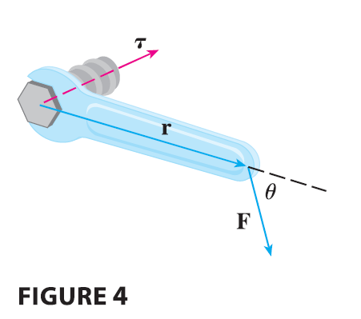
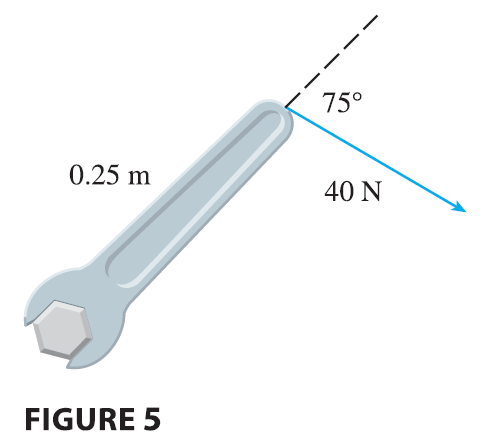

The idea of a cross product occurs often in physics. In particular, we consider a force F acting on a rigid body at a point given by a position vector r. The torque \(\mathbf{\tau}\) (relative to the origin) is defined to be the cross product of the position and force vectors \[ \mathbf{\tau} = \mathbf{r} \times \mathbf{F} \] and measures the tendency of the body to rotate about the origin. The direction of the torque vector indicates the axis of rotation. According to Theorem 9, the magnitude of the torque vector is \[ |\mathbf{\tau}| = |\mathbf{r} \times \mathbf{F}| = |\mathbf{r}||\mathbf{F}|\sin\theta \] where \(\theta\) is the angle between the position and force vectors. Observe that the only component of F that can cause a rotation is the one perpendicular to r, that is, \(|\mathbf{F}|\sin\theta\). The magnitude of the torque is equal to the area of the parallelogram determined by r and F.
EXAMPLE 6 A bolt is tightened by applying a 40-N force to a 0.25-m wrench as shown in Figure 5. Find the magnitude of the torque about the center of the bolt.
